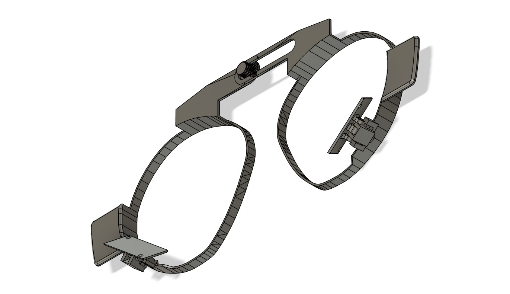
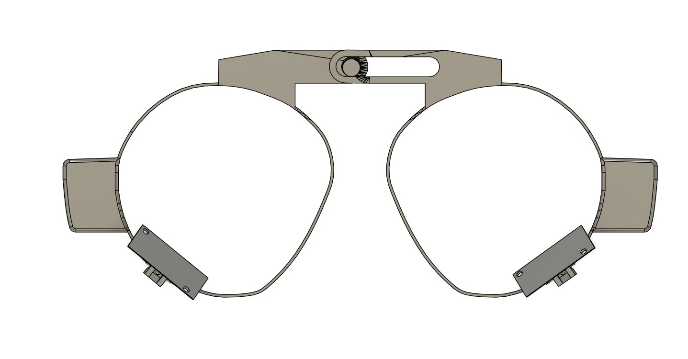
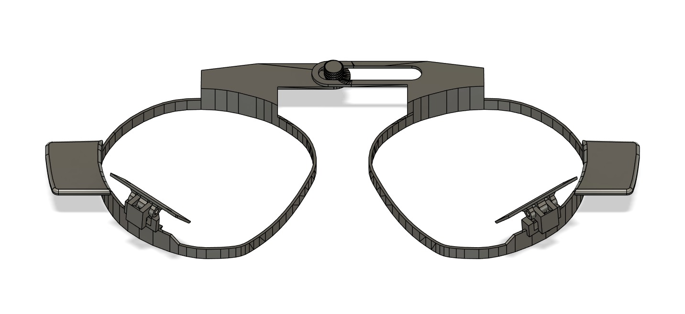
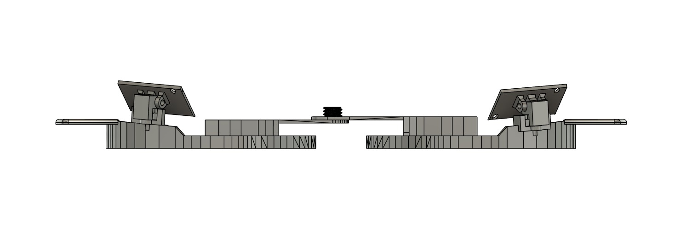
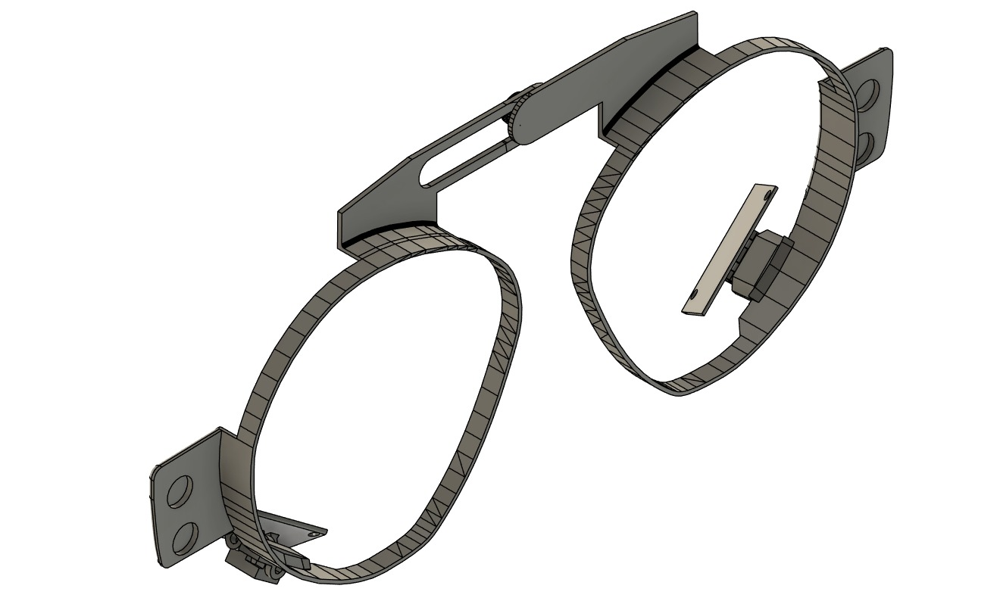
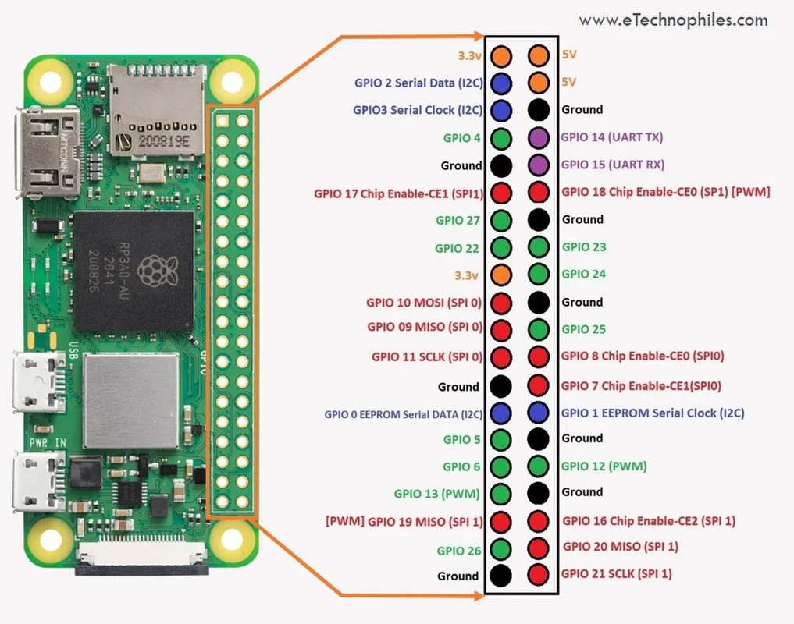
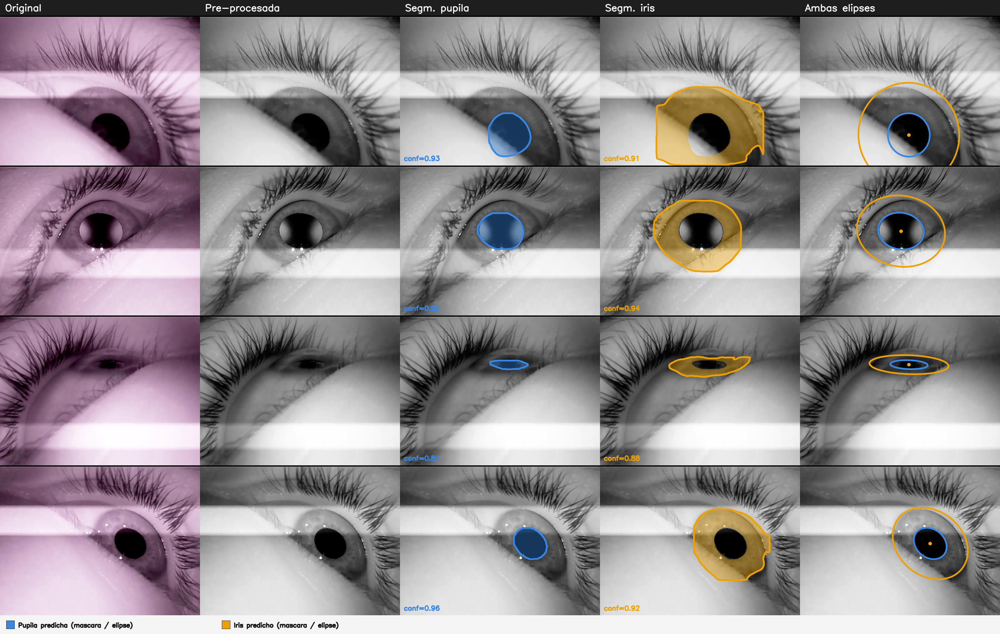

Dilatación pupilar sobre Meta Quest Pro
Abierta y replicable
El visor tiene seguimiento ocular de fábrica, pero su SDK no expone el tamaño de la pupila. Este sistema lo entrega: soporte impreso en 3D, dos cámaras infrarrojas, dos Raspberry Pi y un pipeline serverless que calcula la razón pupila/iris fotograma a fotograma. Unos US$162 en componentes; costo fijo cero cuando no procesa.
El sistema entrega la razón entre el área de la pupila y el área del iris, un indicador adimensional de dilatación relativa. No entrega el diámetro pupilar en milímetros.
Áreas analíticas π·a·b sobre la elipse ajustada. Un registro por fotograma, en JSON o CSV. La razón es 0.0 si el área del iris es 0 — nunca hay división por cero.
Replicar
Cómo reconstruir el sistema, paso a paso
Sigue los cinco pasos en orden. Cada uno indica qué hacer, qué necesitas y dónde está el detalle si quieres profundizar.
Costo de componentes
150.200 CLP (~US$162), sin contar el visor.
Necesitas antes de empezar
Un Meta Quest Pro.
Una cuenta de AWS con permisos de administración.
Acceso a impresora 3D o a un servicio de impresión.
Un equipo con Docker, AWS CLI y AWS SAM CLI instalados.
Un endpoint HTTP que reciba los resultados (puede ser el módulo de visualización o uno propio).
Advertencia
El modelo de segmentación incluido está ajustado a las condiciones ópticas de este montaje. Si cambias cámara, ángulo o iluminación, conviene reentrenar (ver sección Modelo).
Paso 1
Imprimir el soporte
El soporte aloja las dos cámaras apuntando a los ojos sin obstruir las lentes del visor. Se fija combinando presión y acople magnético sobre el borde externo del Quest Pro, donde el visor ya trae imanes para sujetar los bloqueadores de luz: no hay que modificar el dispositivo. Cada marco incorpora dos ejes que permiten ajustar el ángulo de su cámara según la anatomía de quien lo use.
Modelo 3D
Modelo 3D
[FALTA: soporte.glb] — espacio reservado para el visor rotable del soporte.
Archivos imprimibles
Sin el archivo imprimible no hay replicación posible.
[FALTA: soporte.stl][FALTA: soporte.step]
Parámetros de impresión
Material[FALTA]
Altura de capa[FALTA]
Relleno[FALTA]
Soportes[FALTA]
Orientación[FALTA]
Tolerancia ejes / asientos de imán[FALTA]
Vistas del soporte
Deslízalas para recorrerlas →

Isométrica — cómo quedan ambos marcos y el puente central ya impresos

Alzado frontal — separación entre marcos, referencia para verificar el ancho impreso

Frontal con cámaras — encuadre esperado de cada cámara sobre el ojo

Planta — ángulo de los ejes de ajuste, visible desde arriba

Isométrica posterior — ubicación de los asientos de imán contra el borde del visor
Paso 2
Comprar y ensamblar
Lista de materiales
Componente
Uds.
Raspberry Pi Zero 2W
2
Cámara GC0308 (NIR, con LED 850 nm integrados)
2
Módulo X306 (UPS HAT)
2
Batería 18650 (3,7 V)
2
MicroSD 16 GB
2
Imanes de neodimio
1 set
Material de impresión
—
La cámara es infrarroja y no de luz visible porque la iluminación NIR mantiene el contraste entre pupila e iris con independencia de la pigmentación del iris; con luz visible ese contraste se derrumba en iris oscuros. Cada módulo trae sus propios LED de 850 nm, así que no se necesita iluminación externa.
La alimentación por batería es opcional: hace falta cuando el usuario se desplaza con el visor puesto durante la sesión, porque un cable comprometería el movimiento. En montajes donde el usuario permanece fijo, las Raspberry Pi pueden alimentarse por cable. La celda 18650 rinde 40 minutos frente a los 20 de sesión máxima y es removible.
Ensamblaje
Cada cámara se conecta a su Raspberry Pi por el puerto USB.
Conexión UART entre las dos Pi: el TX de una va al RX de la otra y viceversa (cruzado), con GND común entre ambas placas. El software usa /dev/ttyAMA0, que en la Raspberry Pi Zero 2W corresponde a los pines GPIO14 (TX) y GPIO15 (RX).

Pinout de referencia — GPIO14 (TX) y GPIO15 (RX) de cada Pi se cruzan hacia la otra (TX→RX, RX→TX), con un pin GND compartido entre ambas placas.
Foto del montaje
[FALTA: fotografía del montaje real sobre el visor, no solo renders del soporte]
Paso 3
Desplegar el pipeline en AWS
Este paso va antes de configurar las Pi (paso 4): el despliegue crea el bucket S3 al que las Pi suben los videos, y su nombre ({nombre-del-stack}-videos-{id-de-cuenta}) recién existe después. Configurar las Pi primero obliga a rehacer el .env.
Trámite previo, hazlo primero. Las cuentas nuevas de AWS arrancan con el límite de ejecuciones concurrentes de Lambda en 10, y con ese valor el primer despliegue falla. Pide el aumento a 1.000 por Service Quotas antes de desplegar; la aprobación tarda entre minutos y dos días hábiles. Las cuentas nuevas también vienen limitadas a 3.008 MB de memoria por función, lo que condiciona los parámetros de rendimiento.
Herramientas: AWS CLI, AWS SAM CLI y Docker corriendo. El README está escrito y probado en macOS; en Linux o Windows hay que adaptar la instalación de cada herramienta.
Antes de desplegar: exporta el modelo a ONNX y déjalo en functions/inference/model/yolo26l_seg.onnx —el nombre es exacto y el repositorio no entrena ni exporta pesos— y completa el .env con credenciales, región y la URL del endpoint que recibirá las notificaciones.
Desplegar: un solo comando, ./scripts/deploy.sh, que construye las imágenes Docker, las publica y crea todo el stack: dos buckets, tres funciones Lambda, el state machine, la regla de eventos y los roles.
Anota el nombre del bucket de videos que quedó creado. Lo necesitas en el paso 4.
Graba Raspberry Pi OS Bookworm 32-bit en cada una de las dos microSD. Una Pi por ojo: clona el repositorio RPi en cada una, copia .env.example a .env y ejecuta el instalador indicando el rol: sudo bash setup/setup.sh master en una y sudo bash setup/setup.sh slave en la otra. El script instala dependencias, habilita UART (edita config.txt y cmdline.txt), deja la aplicación como servicio pupilometry.service y reinicia.
Qué hace cada rol. La master levanta un portal cautivo (Balena WiFi Connect) si no encuentra red conocida; cuando se conecta, le pasa las credenciales a la slave por UART, y la slave configura su red sola. Tú configuras una sola red, no dos.
Con UPLOADER=s3, además hay que dejar las credenciales de AWS en el entorno de cada Pi.
Para grabar en Raspberry Pi conviene RECORDING_BACKEND=ffmpeg y PREFERRED_CODEC=H264, que usa el codificador por hardware h264_v4l2m2m y baja la carga de CPU. La salida queda en escala de grises.
Cómo se dispara una grabación. La aplicación escucha comandos por WebSocket. El modo depende de con qué se integre: pupilometry para conectarse directo al backend del módulo de visualización, base para responder a una sesión de VR del proyecto mayor, dual para ambas, legacy para pruebas directas. Para probar sin nada montado puedes enviar start <session_id> <eye_id> y stop por texto plano a un WebSocket local, con UPLOADER=simulated.
Detalle de variables y solución de problemas en el README de RPi.
Paso 5
Conectar el destino de los datos y verificar
Destino
Al terminar el procesamiento, el pipeline envía un POST pequeño —metadata más una URL de descarga firmada— al endpoint configurado. Nunca envía los datos en el cuerpo. El endpoint hace un GET a esa URL y obtiene el archivo consolidado. Puede ser el módulo de visualización del proyecto o cualquier servicio propio que implemente ese contrato.
Verificación — la prueba de aceptación de tu réplica
Reproduce el video de estímulo fotomotor [FALTA: publicar el archivo o las instrucciones para generarlo], que impone 30 segundos de adaptación a la oscuridad y luego seis ciclos de 4 segundos de luz seguidos de 8 de oscuridad.
Graba una sesión con ese estímulo y procésala.
Qué debe verse: durante la adaptación la razón se mantiene alta, entre 0,20 y 0,30. Con cada encendido cae abruptamente a 0,05–0,10 y en la ventana oscura siguiente se recupera de forma gradual. Seis veces, con ambos ojos siguiendo trayectorias consistentes entre sí. Las caídas puntuales aisladas son parpadeos y se descartan por umbral de confianza bajo 0,3.
Si la señal reproduce ese patrón, tu réplica funciona: el sistema está capturando el reflejo fotomotor. Es el mismo patrón que corre en el medidor del encabezado de esta página.
Pipeline · pdt-pupilometry/AWS_fluxx
De archivo a serie de tiempo
Diagrama ancho — desliza para recorrerlo →
El video llega a un bucket, un evento dispara una ejecución por video, se extraen los fotogramas, se segmentan en paralelo hasta mil a la vez y una última etapa consolida, reconcilia los fallos y notifica con un link de descarga. Todo serverless; sin videos, la cuenta no gasta nada.
El tercer componente: la interfaz del investigador
Permite al investigador iniciar sesiones de grabación, revisar el historial y visualizar la serie temporal de ambos ojos. Está construido en Django y Vue 3 e integrado en la plataforma ALFONSO.
Es sustituible. Cualquier servicio que reciba la notificación del pipeline y descargue el archivo consolidado (ver paso 5) cumple la misma función.
Repositorio: [FALTA: URL del repositorio]
Modelo y datos
Los pesos que vienen, y los que deberías entrenar
Panel ancho — desliza para ver las cinco columnas →

Salida del modelo incluido sobre cuatro fotogramas reales — original, pre-procesada, máscara de pupila, máscara de iris y elipses ajustadas
El pipeline llega con un modelo de segmentación ya entrenado, para que puedas desplegar y ver resultados el primer día. Está afinado sobre video de este montaje: cámaras GC0308 en infrarrojo, a la distancia y el ángulo que impone el soporte, en escala de grises y con el bandeado del rolling shutter incluido.
Ese es justamente su límite: otra cámara, otro ángulo, otra iluminación o una población distinta ya son otro dominio, y el modelo incluido va a rendir peor de lo que rindió acá.
Cómo reemplazarlo. Entrena tu .pt con dos clases (0 = pupila, 1 = iris) anotadas como polígono de elipse completa, expórtalo a ONNX con el script del repositorio, déjalo en functions/inference/model/yolo26l_seg.onnx y vuelve a desplegar (paso 3). El resto del sistema no se entera.